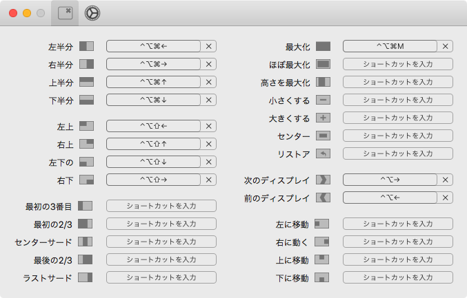
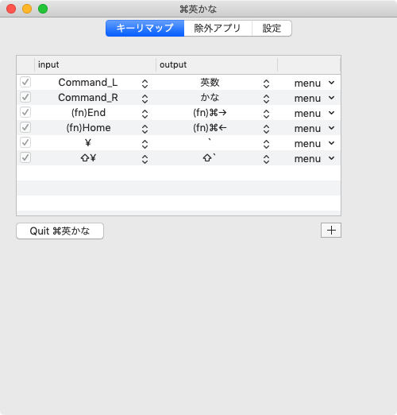
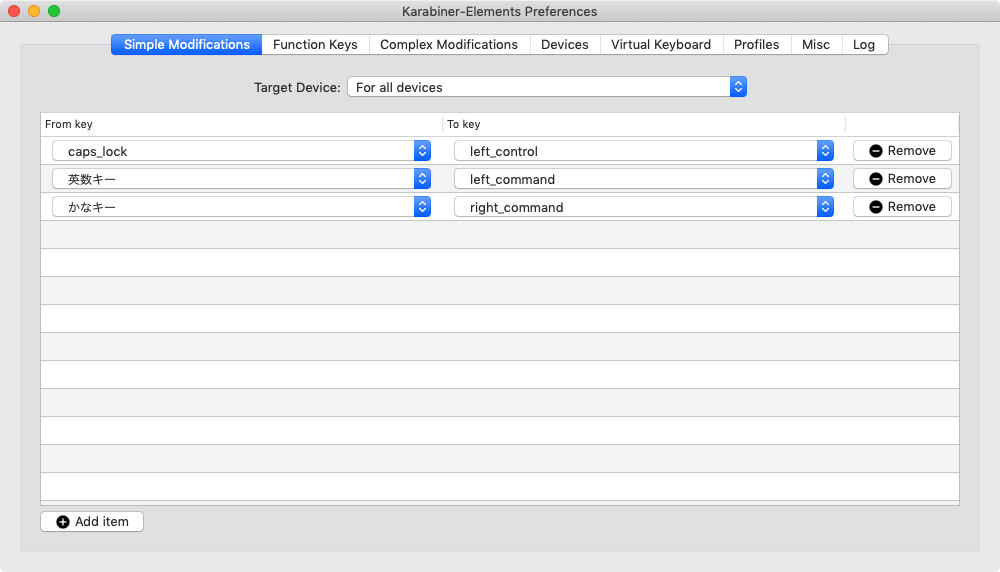
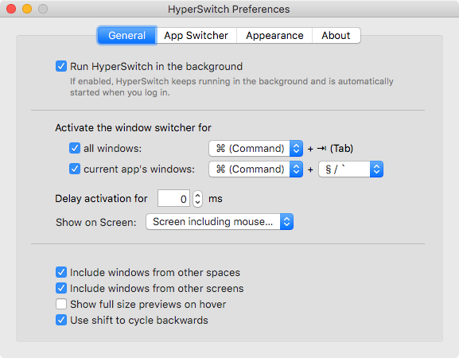

MacOS でウィンドウ操作をキーボードで行うツールを SizeUp から Rectangle に変えた
コレまで、MacOS でウィンドウ操作をキーボードで行うためのツールとして、SizeUp というモノを使っていた。
Control + Option + Command + M で最大化、Control + Option + Shift + 矢印キー でウィンドウを画面の上下左右にリサイズ配置、などなど、色々な操作ができる。
便利なので好んで使ってきたのだが、無料版は時々広告のポップアップが入るのが鬱陶しかった。
そんなある日、Rectangle という同様のアプリを見つけた。
- GitHub - rxhanson/Rectangle: Move and resize windows on macOS with keyboard shortcuts and snap areas
GitHub でソースも公開されており、インストーラをダウンロードできる他、Homebrew Cask を使ってのインストールもできる。
$ brew cask install rectangle
デフォルトのキーボードショートカットは SizeUp と異なるが、自由にショートカットを変更でき、SizeUp と全く同じキー設定にできた。

なにより、完全無料で広告も出ないので、抜群の使い心地。Rectangle 様々である。
というワケで、自分が常時起動している MacOS 環境を整えるためのツール類は、以下に落ち着いた。
- 英かな : Cmd キーの押下を「英数」「かな」キーの動きにさせる
- 自分は JIS 配列の Mac 端末も US 配列に認識させて使っているのだが、そうすると「バッククォート」と「チルダ」を入力するキーがなくなるので、JIS キー右上の「円マーク」キーに「バッククォート」と「チルダ (Shift 押下時)」をアサインするためにも使っている
- 
- Karabiner-Elements : JIS 配列の Mac 端末において、「英数」「かな」キーの押下を Cmd キーの動きにさせるために使用
- 英かなと Karabiner-Elements を両方起動しておくことで、「英数」「かな」キーの単独押下はそのまま、コンビネーション入力は Cmd キーと認識。Cmd キー単独押下は「英数」「かな」と認識させ、コンビネーション入力はそのまま。という動きを実現している。Cmd キーと「英数」「かな」をデタラメに押しても思ったように動くので、重宝している
- 
- US 配列の Mac では「英数」「かな」キー自体が存在しないので、Karabiner-Elements は不要
- HyperSwitch :
Cmd + Tabの動作を Windows チックにする- アニメーションなども消してサクサクと
Cmd + Tab操作ができるようにしている - 自分はコレで事足りているので、仮想デスクトップの類は一切使っていない
- 
- アニメーションなども消してサクサクと
- Rectangle : 今回 SizeUp から移行した、ウィンドウ操作をキーボードで行えるようにするツール
Cmd + Tabで (HyperSwitch を使って) ウィンドウを切り替え、Control + Option + Command + Mでウィンドウ最大化、みたいなキー入力が板についている
コレで良き良き。